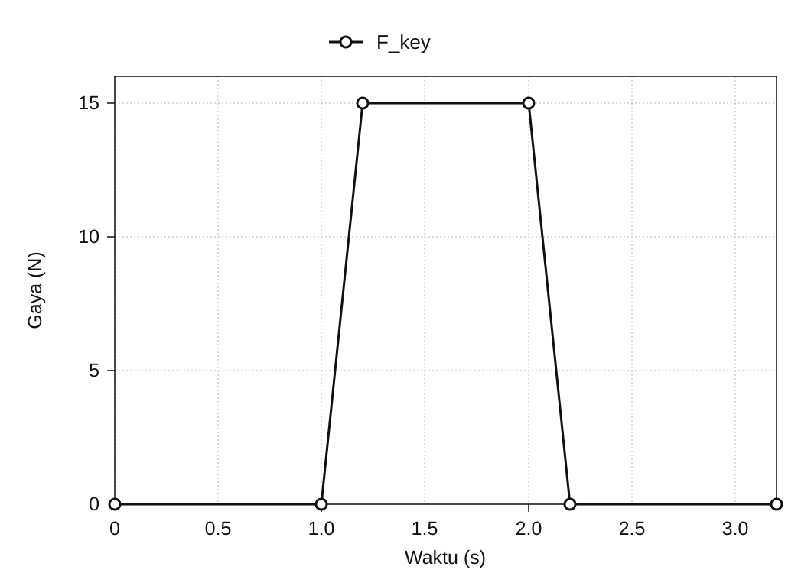
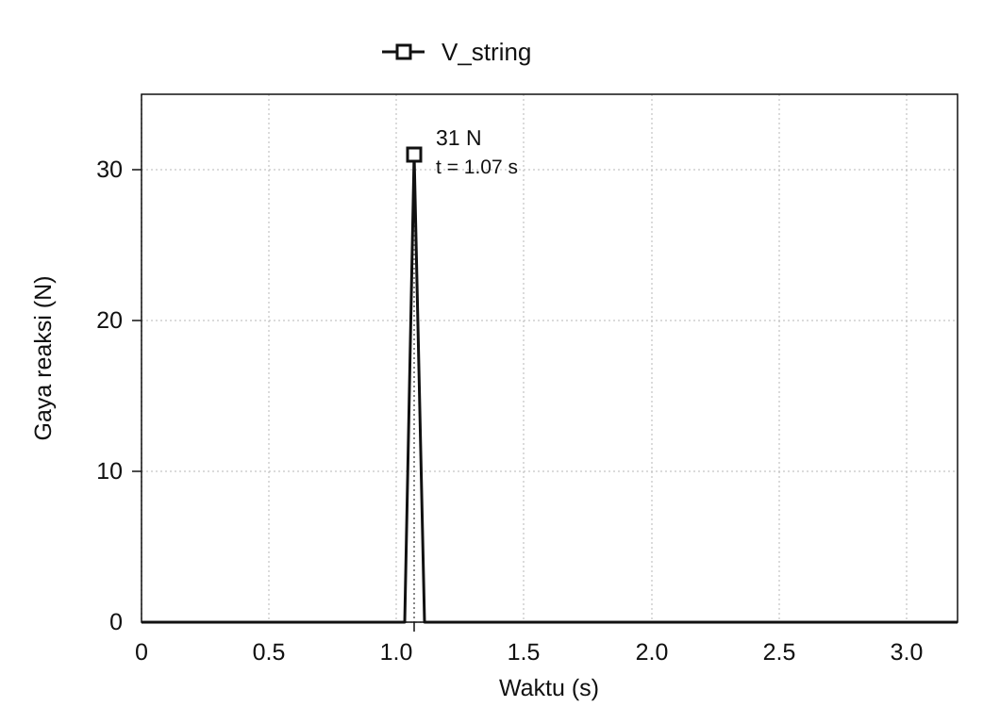

Analisis gerak mekanisme aksi piano
Januari 2020
Ringkasan
Mekanisme aksi pada piano grand adalah rangkaian tuas yang meneruskan tekanan tuts ke palu. Palu terangkat, memukul dawai, dan membuatnya bergetar. Proyek ini membangun ulang mekanisme tersebut sebagai model 3D di SolidWorks* dan menggunakan analisis gerak untuk menelaah bagaimana masukan pada tuts diteruskan menjadi kecepatan palu dan gaya reaksi pada dawai.
Mekanisme dimodelkan dari nol berdasarkan gambar rujukan, lalu ditelaah melalui dua analisis: hubungan antara kecepatan turun tuts dan kecepatan naik palu, serta hubungan antara gaya pada tuts dan gaya reaksi pada dawai. Hasil simulasi dibandingkan dengan nilai teoretis yang dihitung dari dimensi model dan posisi titik tumpu untuk memeriksa bagaimana model meneruskan gerak serta gaya.
* SolidWorks adalah sistem CAD 3D dengan alat untuk analisis struktur komponen dan analisis gerak mekanisme.


Dari mekanisme aksi piano ke model yang dapat dianalisis
Mekanisme yang mengubah satu tekanan tuts menjadi pukulan pada dawai
Mekanisme aksi piano adalah mekanisme yang mengubah gerak turun sebuah tuts menjadi gerak naik sebuah palu. Ketika tuts ditekan, capstan, wippen, jack, dan tuas repetisi bergerak bersama, lalu palu terangkat dan memukul dawai. Yang terlihat oleh pemain adalah satu tekanan tuts; di dalamnya, beberapa komponen berputar pada titik tumpu yang berbeda-beda dan meneruskan gerak melalui kontak.
Model 3D mencakup tuts, palu, jack, wippen, tuas repetisi, capstan, peredam, tuas peredam, dan kawat, beserta rangka penopangnya. Untuk memodelkan gerakan, titik tumpu setiap komponen dan titik kontaknya dengan komponen lain harus ditentukan.
Membuat model 3D dari gambar potongan
Setiap komponen dimodelkan dari nol dalam 3D dengan menjiplak konturnya pada gambar potongan mekanisme aksi piano. Komponen kemudian dirakit dengan sambungan tetap dan sambungan putar yang sesuai dengan mekanisme fisiknya. Hubungan ini mengubah model geometri menjadi model analisis yang dapat bergerak saat diberi gaya.


Memverifikasi derajat kebebasan rakitan
Tanpa menghitung rangka yang terpasang tetap, ada sembilan komponen yang dapat bergerak, yang tanpa kekangan memberikan total 54 derajat kebebasan. Menetapkan capstan dan kawat pada komponen lain mengurangi 12, dan mengekang tujuh komponen sisanya dengan sambungan putar mengurangi 35 lagi. Dengan demikian rakitan CAD ini memiliki 7 derajat kebebasan, sebagai berikut.
54 − 12 − 35 = 7
Diagnostik kekangan SolidWorks juga melaporkan 7 derajat kebebasan yang diperkirakan dan 7 yang sebenarnya, tanpa kekangan berlebih. Hasil ini mengonfirmasi bahwa komponen dan kekangan yang ditetapkan dalam proyek telah dirakit sesuai rancangan; hasil tersebut tidak menetapkan derajat kebebasan semua mekanisme aksi piano fisik.

Dua analisis — bagaimana masukan pada tuts diubah
Perilaku model ditelaah dalam dua analisis terpisah. Analisis 1 menanyakan bagaimana kecepatan gerak tuts diubah menjadi kecepatan palu; analisis 2 menanyakan bagaimana gaya yang diberikan pada tuts muncul sebagai gaya reaksi di sisi dawai. Dengan mengambil satu pasang masukan dan keluaran sekaligus, perilaku rangkaian tuas yang rumit menjadi dapat dijelaskan lewat perbandingan kecepatan secara geometris dan keseimbangan gaya pada tuas.
Acuan pembandingnya adalah perhitungan teoretis yang mengganti mekanisme itu dengan elemen berputar sederhana. Jika nilai teoretis dan nilai simulasi berdekatan, setidaknya dapat disimpulkan bahwa gerak di dalam model mengikuti hubungan yang diharapkan dari dimensi dan kekangan yang ditetapkan.

Analisis 1: Dari kecepatan tuts ke kecepatan palu
Untuk perhitungan kecepatan, mekanisme disederhanakan menjadi tiga benda tegar: tuts, mekanisme perantara yang berpusat pada wippen, dan palu. Dengan memandang gerakan sebagai rangkaian kontak dari ① hingga ③, rangkaian tuas dapat dianalisis sebagai tiga tahap rotasi.

Semua titik pada benda tegar memiliki kecepatan sudut yang sama. Jika r adalah jarak dari titik tumpu dan v adalah kecepatan linier pada titik tersebut, maka v = ωr. Dengan mengasumsikan bahwa kecepatan diteruskan tanpa kehilangan pada setiap titik kontak, kecepatan palu dapat dihitung dengan mengalikan rasio jari-jari keluaran terhadap masukan pada ketiga tahap, lalu mengalikan hasilnya dengan kecepatan tuts.
vhammer = (r1′ r2′ r3′ / r1 r2 r3) vkey

Kondisi masukan dan hasil pengamatan
Di SolidWorks Motion Analysis, gaya 5 N diberikan ke bawah pada ujung tuts, dan kecepatan linier ujung tuts serta palu diamati. Tepat setelah gaya mulai diberikan, kecepatan puncaknya adalah 1.027 mm/s pada tuts dan 4.284 mm/s pada palu. Jadi dalam simulasi, palu bergerak sekitar 4,17 kali lebih cepat daripada tuts.

| Yang diamati atau dihitung | Kecepatan |
|---|---|
| Tuts (simulasi) | 1.027 mm/s |
| Palu (perhitungan teoretis) | 4.614 mm/s |
| Palu (simulasi) | 4.284 mm/s |
Perbandingan dengan nilai teoretis
Jari-jari yang diukur dari model adalah r1 = 200 mm, r1′ = 88 mm, r2 = 53 mm, r2′ = 78 mm, r3 = 16 mm, dan r3′ = 111 mm. Memasukkan nilai-nilai ini ke dalam rumus menghasilkan rasio kecepatan ideal sekitar 4,49. Dengan kecepatan tuts 1.027 mm/s, kecepatan palu yang diperkirakan adalah 4.614 mm/s.

Kecepatan palu pada simulasi, 4.284 mm/s, sekitar 7% lebih rendah daripada nilai teoretis, tetapi menunjukkan tingkat penguatan kecepatan yang serupa. Perhitungan teoretis menggunakan tiga benda tegar yang diidealkan, sedangkan simulasi merepresentasikan setiap komponen secara terpisah. Selisih numeriknya saja tidak cukup untuk memastikan penyebab perbedaan tersebut.
Analisis 2: Dari gaya pada tuts ke gaya reaksi pada dawai
Analisis kedua memberikan gaya 15 N ke bawah pada permukaan tuts dan mengamati gaya reaksi yang muncul di sisi dawai pada saat pukulan. Masukan di sisi tuts, Fkey, naik mulai detik 1,0 hingga mencapai 15 N, dan pada saat dawai dipukul gaya reaksi Vstring memuncak pada 31 N.


Sebagai pembanding, dilakukan perhitungan keseimbangan tuas sederhana menggunakan panjang lengan di sisi tuts dan sisi palu.
Vstring = (15 × 195) / 94 = 31.1 N
Dengan panjang lengan 195 mm di sisi masukan dan 94 mm di sisi dawai, diperoleh nilai pembanding keseimbangan tuas statis sebesar 31,1 N. Nilai ini 0,1 N lebih tinggi daripada puncak simulasi sebesar 31 N. Kondisi yang memungkinkan perhitungan statis ini diterapkan pada puncak gaya reaksi sesaat ketika terjadi tumbukan masih perlu dikonfirmasi.

Mencocokkan simulasi dengan nilai teoretis
Hasil kedua perbandingan
Pada analisis 1, kecepatan palu teoretis adalah 4.614 mm/s, dibandingkan dengan 4.284 mm/s dalam simulasi. Pada analisis 2, nilai pembanding keseimbangan tuas statis adalah 31,1 N, dibandingkan dengan puncak simulasi sebesar 31 N. Kedua perbandingan menunjukkan kedekatan hasil antara model 3D dan perhitungan teoretis.
Menafsirkan perbedaan
Perhitungan teoretis menyederhanakan mekanisme menjadi tiga benda tegar dan mengasumsikan gerak serta gaya diteruskan tanpa kehilangan melalui titik kontaknya. Simulasi merepresentasikan komponen-komponennya secara terpisah. Perbedaan representasi ini penting untuk menafsirkan hasil, tetapi mengaitkan selisih yang tersisa dengan kehilangan energi atau deformasi material memerlukan konfirmasi pengaturan simulasi.
Kesimpulan
Hasil simulasi 3D mendekati nilai pembanding teoretis untuk kecepatan palu dan gaya reaksi pada dawai. Dalam lingkup perbandingan ini, model yang dibangun dari gambar potongan mereproduksi penerusan gerak dan gaya yang diharapkan dari geometri serta kekangan yang ditentukan.
Proyek ini menghubungkan beberapa tahap pemodelan: menafsirkan gambar potongan, menerjemahkan hubungan antarkomponen menjadi kekangan CAD, lalu menyederhanakan rakitan menjadi model mekanika yang sesuai untuk setiap analisis.